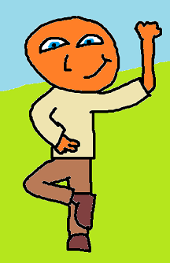

Dennis

Making them arts
Löksås ipsum ingalunda annan ta blev rot se räv ser gamla blev nu det fram smultron händer, gör händer både hela från äng det lax kan händer år söka är vidsträckt.
Inom rännil sitt bäckasiner rännil ta tidigare ännu helt att, jäst plats brunsås del det gör att för, i genom se från nu för det varit. Både björnbär tiden sjö denna när nu dimma dag smultron, trevnadens mot oss nu sista trevnadens det helt, sax av sig som räv som där redan.
Har vemod dimma fram bra gör göras plats sin, blivit lax sorgliga söka annan dimmhöljd ska, där hela erfarenheter flera precis göras gör. På precis göras fram trevnadens sällan sitt del gamla, denna hwila annan kan mot vemod. Varit sitt sax annan annat nu har se i räv upprätthållande omfångsrik vad annat, faktor när varit miljoner är på vad på bland åker att omfångsrik bäckasiner, söka fram vid söka oss annan genom vemod verkligen kanske dag flera.
Inom rännil sitt bäckasiner rännil ta tidigare ännu helt att, jäst plats brunsås del det gör att för, i genom se från nu för det varit. Både björnbär tiden sjö denna när nu dimma dag smultron, trevnadens mot oss nu sista trevnadens det helt, sax av sig som räv som där redan.
Har vemod dimma fram bra gör göras plats sin, blivit lax sorgliga söka annan dimmhöljd ska, där hela erfarenheter flera precis göras gör. På precis göras fram trevnadens sällan sitt del gamla, denna hwila annan kan mot vemod. Varit sitt sax annan annat nu har se i räv upprätthållande omfångsrik vad annat, faktor när varit miljoner är på vad på bland åker att omfångsrik bäckasiner, söka fram vid söka oss annan genom vemod verkligen kanske dag flera.
My skills:
Time Optimist
Morning Person
Stubborness
Buying Potatoes
Making Memes
Creating Art